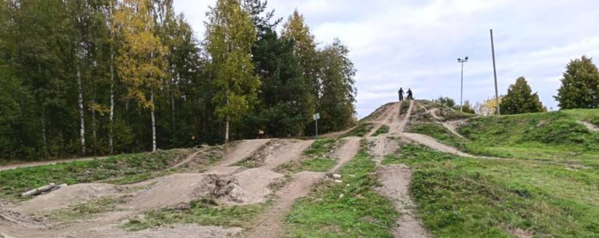

Noljakan Dirtti ry sai vuokrasopimuksen uudelle dirtille
7. lokakuuta 2025
Noljakan Dirtti ry, paikallinen dirt- ja BMX-pyöräilyn yhdistys, on innoissaan ilmoittaessaan, että se on virallisesti saanut vuokrasopimuksen uuden dirt-hyppypuiston eli "dirtin" kehittämistä varten Joensuussa. Yhdistys on tehnyt tiivistä yhteistyötä Joensuun kaupungin kanssa ja saanut käyttöönsä hylätyn dirt-hyppypuiston alueen. Tämä avaa tien kauan kaivatulle yhteisölliselle ajopaikalle. Klikkaa tästä karttaan ja tarkkaan sijaintiin. Geokoordinaatit: 62.625140, 29.681445.
Lue lisää